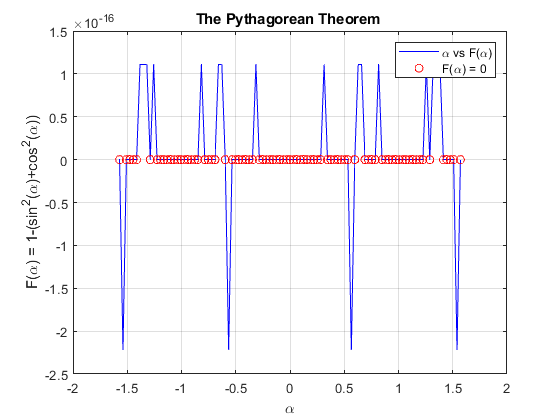

% Step 1. Problem statement
MATLAB’s precision is not absolute. Pythagorean Theorem: F = 1 - (sin^2 + cos^2 ); Input variable: = -0.5* ...0.5*
Contents
% Step 2. Define the input variable
alpha = -pi/2:pi/100:pi/2;
% Step 3. Perform the computation
F = 1-(sin(alpha).^2+cos(alpha).^2);
% Step 4. Define for which values of
Findex=find(F==0); F0=F(Findex);
% Step 5. Plot the simulation results: vs.
plot(alpha, F, 'b-', alpha(Findex), F0, 'ro'), legend('\alpha vs F(\alpha)', 'F(\alpha) = 0') title('The Pythagorean Theorem '), grid on xlabel('\alpha'), ylabel('F(\alpha) = 1-(sin^2(\alpha)+cos^2(\alpha))')